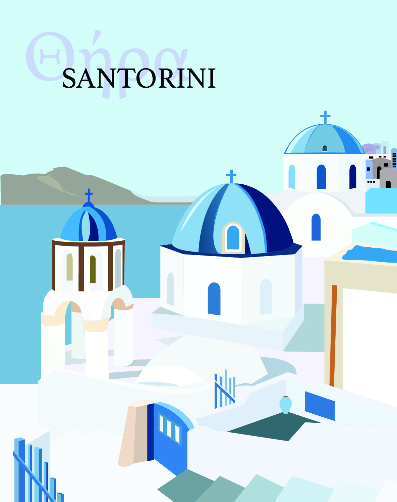
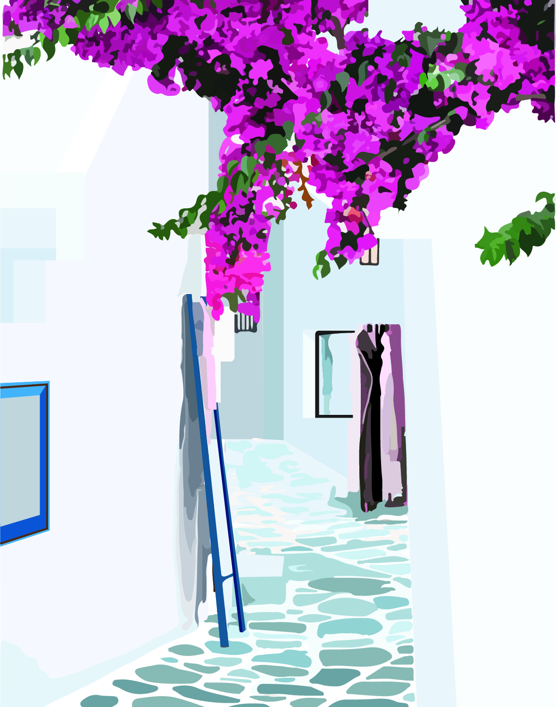
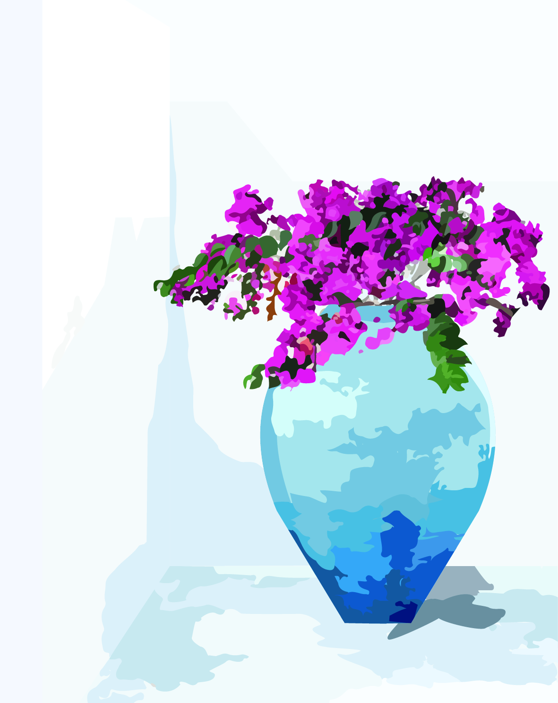
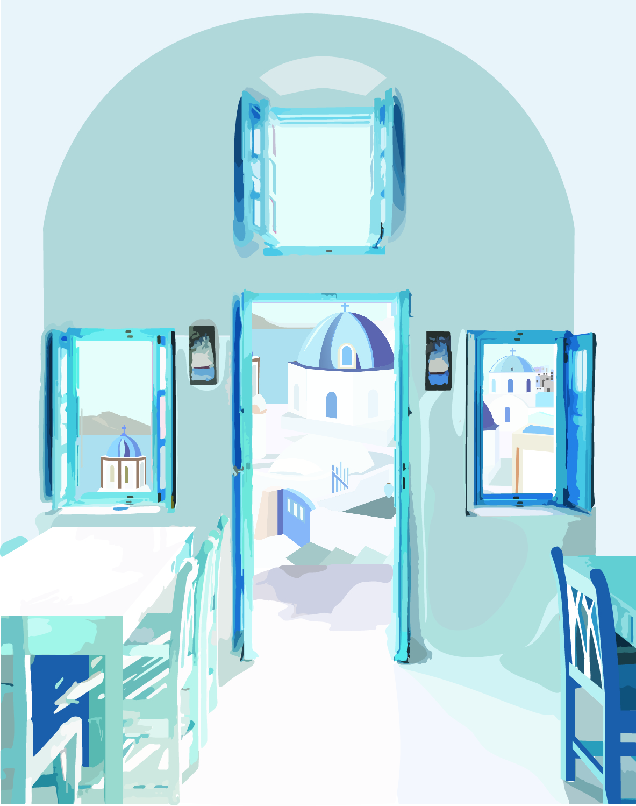
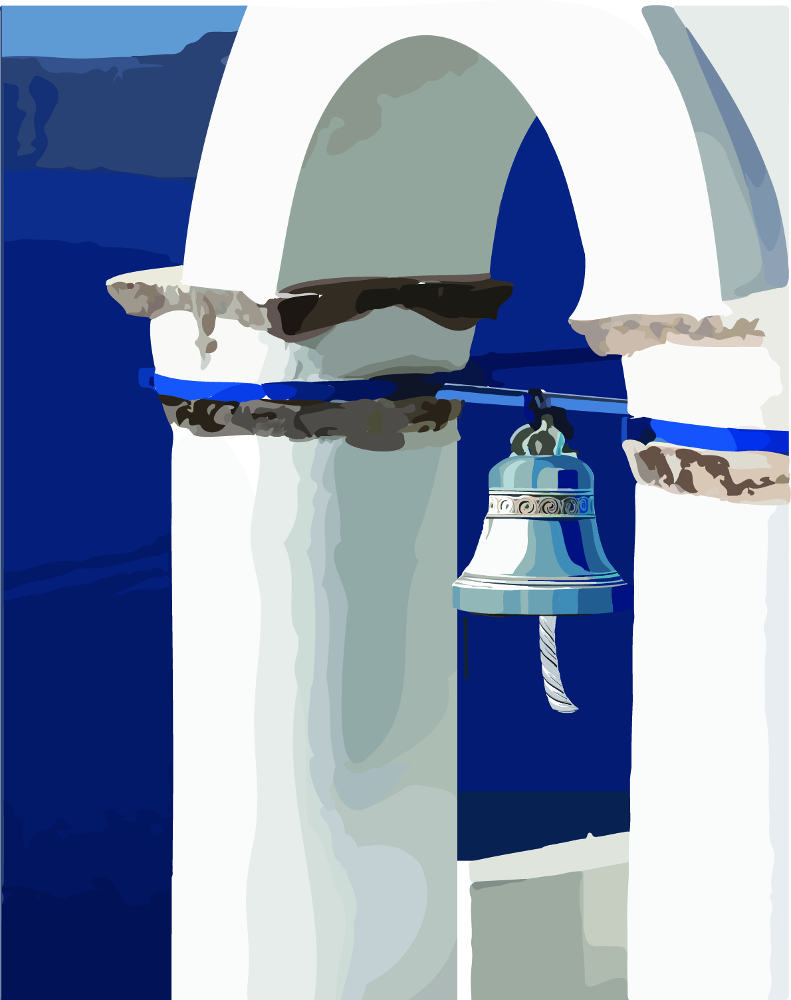

DIGITAL ILLUSTRATIONS
WHEN IN SANTORINI
A series of five digital postcards made for a drawing class at Parsons. I chose Santorini and wanted each postcard to capture a different aspect of the place, pulling the viewer in closer with each piece. The first introduces it by name. After that, the text steps back and lets the imagery do the work.
The palette stays in the same world throughout: powder blue skies, white plaster, cobalt shutters, and the occasional burst of magenta bougainvillea that Santorini is known for. The scale shifts from wide landscape views all the way down to tight close-ups of a church bell and a vase of flowers. The idea was to make someone feel like they had been there, not just seen a photo of it.





COMFORT FOOD
During lockdown I started baking and eventually turned it into a small business called Truffle and Hustle, a homegrown baking company I founded. Carrot cake and lemon cake were the two recipes I kept coming back to, and for a long time my references were a photo on my phone or a scrap of paper with measurements scrawled on it.
I wanted a better way to have them around. So I illustrated them, turning each recipe into something colorful and a little fun that I could actually put up in my kitchen. Two illustrated recipe cards with hand lettered ingredients, each one built around the finished dish. Something useful that also brings a bit of life to the space.